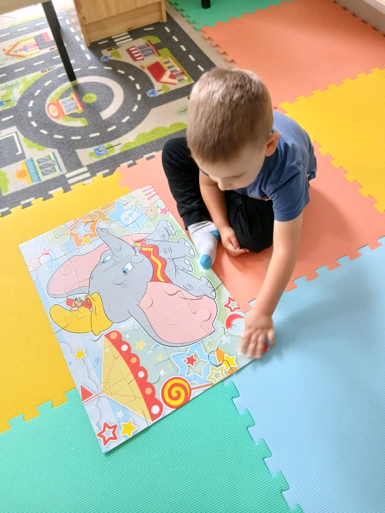
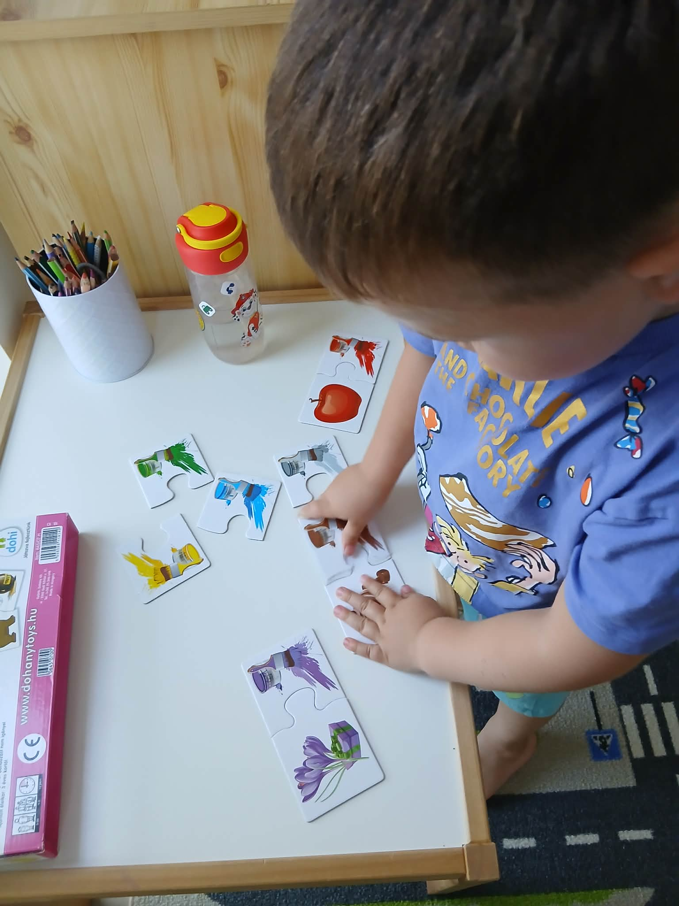

Komplex felmérés
Megismerjük a gyermek jelenlegi készségeit és képességeit, hogy a fejlesztés megfelelő kiindulópontra épülhessen.
ÉrdeklődömJátékos, személyre szabott fejlesztés a legkisebbektől az iskoláskorig. Biztonságos, támogató közegben segítjük a gyermekeket saját tempójukban kibontakozni.
Ismerős valamelyik helyzet?
Ha kérdésed van gyermeked fejlődésével kapcsolatban, egy szakmai felmérés segíthet eligazodni a következő lépésekben.
Amiben segítünk
A fejlesztés mindig a gyermek aktuális képességeiből és szükségleteiből indul ki. Ismerd meg a fő foglalkozási területeinket.
Megismerjük a gyermek jelenlegi készségeit és képességeit, hogy a fejlesztés megfelelő kiindulópontra épülhessen.
ÉrdeklődömMár 2 hónapos kortól 3 éves korig, többek között a mozgás és a beszéd fejlődésének támogatására.
ÉrdeklődömBeszédindítás, mozgáskoordináció és gondolkodási készségek játékos, életkorhoz illeszkedő fejlesztése.
ÉrdeklődömMozgásos feladatokkal támogatja többek között az egyensúly, a koordináció és a figyelem fejlődését.
ÉrdeklődömAz iskolakezdéshez szükséges készségek erősítése, játékos feladatokon és kiscsoportos gyakorlatokon keresztül.
ÉrdeklődömTanulási támogatás, tantárgyi felzárkóztatás és gyakorlás az általános iskola 6. osztályáig.
ÉrdeklődömAz első lépés lehet egy beszélgetés
Így indul a közös munka
Az első érdeklődéstől a személyre szabott foglalkozásig átlátható, támogató folyamatra törekszünk.
Telefonon vagy e-mailben egyeztetjük, miben kérsz segítséget, és melyik szakemberhez érdemes fordulnotok.
Komplex felmérés során megismerjük az aktuális képességeket, erősségeket és a fejlesztést igénylő területeket.
A javasolt foglalkozásokon játékos formában, a gyermek egyéni tempójához igazodva dolgozunk.
Ismerj meg bennünket
A Manka Fejlesztő Kuckóban fontosnak tartjuk, hogy a gyermekek biztonságban, elfogadó légkörben és örömteli feladatokon keresztül fejlődhessenek.
Az egyéni szükségletekhez illeszkedő foglalkozásokat szakemberek vezetik, és a szülőkkel való együttműködést is a közös munka részének tekintjük.
Pillanatok a Kuckóból
Fedezd fel, hogyan kapcsolódik össze a mozgás, a figyelem és az örömteli játék a foglalkozásainkon.



Gyakran ismételt kérdések
Minden gyermek és helyzet egyedi. Ha nem találsz választ a kérdésedre, keress bennünket közvetlenül.
Korai komplex fejlesztésre 2 hónapos kortól 3 éves korig lehet érdeklődni; emellett óvodás és iskolás korú gyermekek számára is vannak foglalkozási lehetőségek.
A Manka jelenlegi szolgáltatásleírása szerint a fejlesztések megkezdését komplex felmérés előzi meg. Az érdeklődéskor egyeztetjük a pontos lépéseket.
Telefonon vagy e-mailben tudsz érdeklődni. Az időpontot és az aktuálisan elérhető foglalkozásokat közvetlenül egyeztetjük.
A korábbi honlapon a konduktív fejlesztés szüneteléséről volt tájékoztatás. Az aktuális elérhetőségről kérjük, érdeklődj telefonon vagy e-mailben.
Itt kezdődik az első kis lépés
Kérdésed van, vagy szeretnél érdeklődni a fejlesztési lehetőségekről? Keress bennünket bizalommal, és egyeztetjük a következő lépést.
Töltsd ki az adatokat, és megnyitjuk az e-mail alkalmazásodat az előkészített üzenettel.